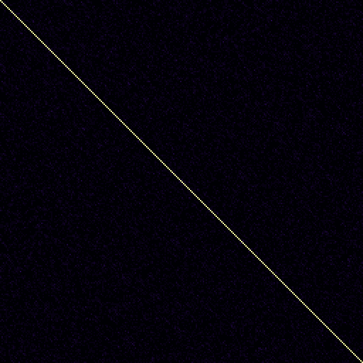
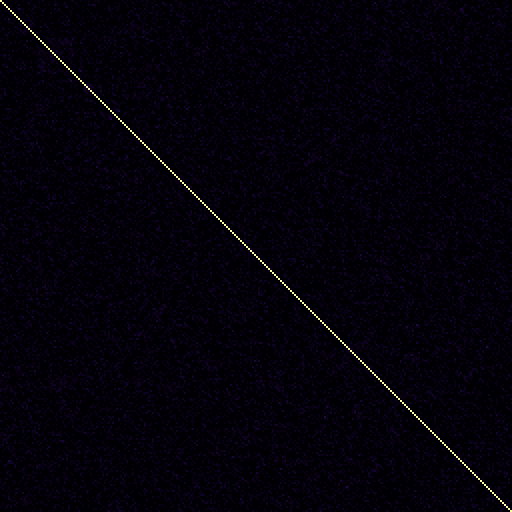

Read-only snapshot of the PiLens gallery, exported 2026-11-06 14:04. Code and how to run it yourself: github.com/fsaritome/PiLens.
recurrence on e, base 10, n = 100,000
Verdict: indistinguishable from random controls. p_maxT = 0.950; classifier accuracy 0.52 (chance 0.5), p = 0.387; p_lens = 0.774; q (BH over 7 lens(es) in this run) = 0.922; 500 controls.


Does this lens show anything interesting?
0👍 0👎
| metric | e | controls mean ± sd | z | p (two-sided) |
|---|---|---|---|---|
| determinism | 0.1923 | 0.1880 ± 0.005 | +0.92 | 0.367 |
| fft_slope | -0.6972 | -0.6835 ± 0.017 | -0.79 | 0.419 |
| fft_peak_log10 | 3.7946 | 3.8010 ± 0.008 | -0.76 | 0.453 |
| lag_max_abs_z | 2.8947 | 2.5995 ± 0.411 | +0.72 | 0.477 |
| recurrence_rate | 0.0099 | 0.0100 ± 9.07e-05 | -0.71 | 0.477 |
| fft_flatness | 0.0354 | 0.0351 ± 0.000448 | +0.70 | 0.473 |
| lag1_match_z | 0.5621 | 0.0063 ± 0.997 | +0.56 | 0.569 |
| img_entropy_bits | 1.2106 | 1.2116 ± 0.006 | -0.16 | 0.862 |
| img_compress_ratio | 0.2314 | 0.2314 ± 0.001 | +0.06 | 0.956 |
Params: {"block": 256, "n_blocks": 40, "embed": 2, "max_lag": 64}. Saved 2026-11-06 09:27:26,
4s.